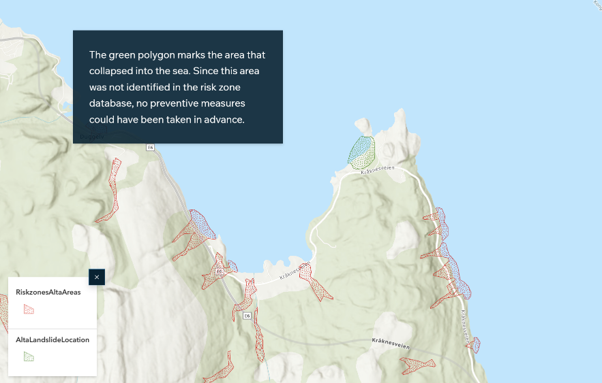

Landslides in Norway
A group project building an ArcGIS StoryMap that communicates landslide risk in Norway and the need for proper mapping of risk zones.
Example image: a screenshot of one slide from the StoryMap.
Role: Map design and StoryMap creation